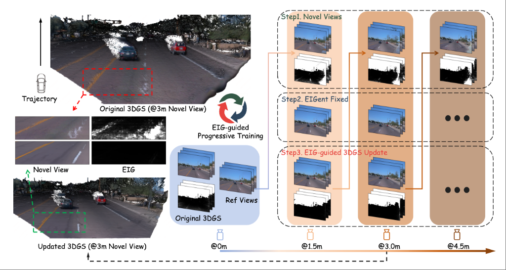

|
Xiaofan Li
I obtained my Bachelor's degree from Zhejiang University (ZJU), where I conducted research under the supervision of Professors Kaiwei Wang, Guofeng Zhang, and Zhihai Xu.
I previously joined the Autonomous Driving Foundation Model Department at Baidu as a Technical Expert, where I worked on 3D perception, vision-language models, implicit rendering and generation, and world models. I am currently working at X Square Robot, continuing to explore research at the intersection of 3D computer vision, autonomous driving, and embodied intelligence.
My research has been centered on open-set 3D spatial perception and planning, as well as unified multimodal models for understanding, perception, planning, and generation.
Email: shalfunnn@gmail.com
[Github] [Google Scholar]
|
|
News
[2025/07] Drivers accepted by ACMMM 2025!
[2025/06] Two papers accepted by ICCV 2025!
[2025/04] MPDrive accepted by CVPR 2025 as a Highlight!
[2025/03] Drag-Your-Gaussian accepted by SIGGRAPH 2025!
[2025/02] Two papers accepted by IJCAI 2025!
[2025/02] Two papers accepted by ICRA 2025!
[2024/07] DrivingDiffusion is accepted by ECCV 2024!
Publications
DrivingDiffusion: Layout-Guided Multi-View Driving Scenarios Video Generation with Latent Diffusion Model
[
paper]
[
code]
Xiaofan Li, Yifu Zhang, Xiaoqing Ye
European Conference on Computer Vision (ECCV), 2024
MPDrive: Improving Spatial Understanding with Marker-Based Prompt Learning for Autonomous Driving
[
paper]
Zhiyuan Zhang*, Xiaofan Li*, Zhihao Xu, Wenjie Peng, Zijian Zhou, Miaojing Shi, Shuangping Huang
Computer Vision and Pattern Recognition Conference (CVPR), 2025 [Highlight]
U-ViLAR: Uncertainty-Aware Visual Localization for Autonomous Driving via Differentiable Association and Registration
[
paper]
Xiaofan Li, Zhihao Xu, Chenming Wu, Zhao Yang, Yumeng Zhang, Jiang-Jiang Liu, Haibao Yu, Xiaoqing Ye, YuAn Wang, Shirui Li, Xun Sun, Ji Wan, Jun Wang
International Conference on Computer Vision (ICCV), 2025
Drag Your Gaussian: Effective Drag-Based Editing with Score Distillation for 3D Gaussian Splatting
[
paper]
[
code]
Yansong Qu, Dian Chen, Xinyang Li, Xiaofan Li, Shengchuan Zhang, Liujuan Cao, Rongrong Ji
ACM SIGGRAPH Conference and Exhibition on Computer Graphics and Interactive Techniques (SIGGRAPH), 2025
DriVerse: Navigation World Model for Driving Simulation via Multimodal Trajectory Prompting and Motion Alignment
[
paper]
[
code]
Xiaofan Li, Chenming Wu, Zhao Yang, Zhihao Xu, Dingkang Liang, Yumeng Zhang, Ji Wan, Jun Wang
DualDiff+: Dual-Branch Diffusion for High-Fidelity Video Generation with Reward Guidance
[
paper]
[
code]
Zhao Yang, Zezhong Qian, Xiaofan Li, Weixiang Xu, Gongpeng Zhao, Ruohong Yu, Lingsi Zhu, Longjun Liu
IEEE International Conference on Robotics and Automation (ICRA), 2025
BevWorld: A Multimodal World Model for Autonomous Driving via Unified BEV Latent Space
[
paper]
[
code]
Yumeng Zhang*, Shi Gong*, Kaixin Xiong*, Xiaoqing Ye, Xiaofan Li, Xiao Tan, Fan Wang, Jizhou Huang, Hua Wu, Haifeng Wang
The Role of World Models in Shaping Autonomous Driving: A Comprehensive Survey
[
paper]
[
code](1.2k)
Sifan Tu, Xin Zhou, Dingkang Liang, Xingyu Jiang, Yumeng Zhang, Xiaofan Li, Xiang Bai
CoopTrack: Exploring End-to-End Learning for Efficient Cooperative Sequential Perception
Jiaru Zhong, Jiahao Wang, Jiahui Xu, Xiaofan Li, Zaiqing Nie, Haibao Yu
International Conference on Computer Vision (ICCV), 2025
Descriptive Caption Enhancement with Visual Specialists for Multimodal Perception
[
paper]
Yanpeng Sun, Jing Hao, Ke Zhu, Jiang-Jiang Liu, Yuxiang Zhao, Xiaofan Li, Gang Zhang, Zechao Li, Jingdong Wang
arXiv preprint arXiv:2412.14233, 2024
NeRF-DetS: Enhanced Adaptive Spatial-Wise Sampling and View-Wise Fusion Strategies for NeRF-Based Indoor Multi-View 3D Object Detection
[
paper]
Chi Huang, Xinyang Li, Yansong Qu, Changli Wu, Xiaofan Li, Shengchuan Zhang, Liujuan Cao
International Joint Conference on Artificial Intelligence (IJCAI), 2024
Revisiting MLLMs: An In-Depth Analysis of Image Classification Abilities
[
paper]
Huan Liu, Lingyu Xiao, Jiangjiang Liu, Xiaofan Li, Ze Feng, Sen Yang, Jingdong Wang
arXiv preprint arXiv:2412.16418, 2024
Learning Multiple Probabilistic Decisions from Latent World Model in Autonomous Driving
[
paper]
[
code]
Lingyu Xiao, Jiang-Jiang Liu, Sen Yang, Xiaofan Li, Xiaoqing Ye, Wankou Yang, Jingdong Wang
IEEE International Conference on Robotics and Automation (ICRA), 2024
Seeing the Future, Perceiving the Future: A Unified Driving World Model for Future Generation and Perception
[
paper]
[
code]
Dingkang Liang, Dingyuan Zhang, Xin Zhou, Sifan Tu, Tianrui Feng, Xiaofan Li, Yumeng Zhang, Mingyang Du, Xiao Tan, Xiang Bai
arXiv preprint arXiv:2503.13587, 2025
Vision Remember: Alleviating Visual Forgetting in Efficient MLLM with Vision Feature Resample
[
paper]
Ze Feng, Jiang-Jiang Liu, Sen Yang, Lingyu Xiao, Xiaofan Li, Wankou Yang, Jingdong Wang
arXiv preprint arXiv:2506.03928, 2025
In Progress:

LoopGen: Generative Street Scene Expansion via Diffusion-Aided Outlier Repair
Xiaofan Li, Yuan Wang, Ji Wan, Jun Wang
BUGS: Universal 3D Gaussian Splatting with a Bi-directional Gaussian Growing Mechanism
Fan Duan, Yumeng Zhang, Xiaofan Li, Xiao Tan, Li Chen
Rethinking Autonomous Driving Planner Beyond Tweaking the Framework
Lingyu Xiao, Jiang-Jiang Liu, Xiaofan Li, Xiaoqing Ye, Wankou Yang
Controllable Panoramic Video Generation with 360-Degree Motion Consistency
Yuzhi Chen, Qi Zeng, Muyang Zhang, Leilei Fan, Xiaofan Li, Changwei Wang, Rongtao Xu, Yanchao Liu, MingMing Yu, Weiliang Meng
Academic Service
-
Conference Reviewer: NeurIPS, ICLR, ICRA, IROS, CVPR, ICCV, ECCV, etc.
-
Journal Reviewer: IJCV, Pattern Recognition, Neurocomputing, TCSVT, NCAA
| © Xiaofan Li | Last update: June 2025 |